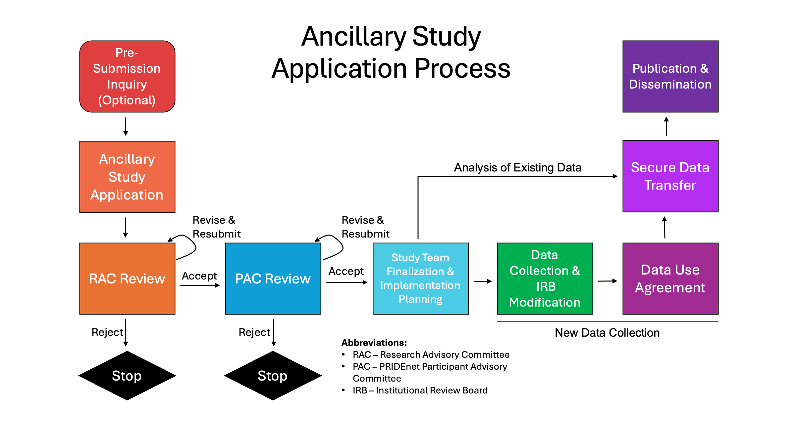

5 Study Design
This section serves as a reference guide for investigators who are preparing a grant application, designing an ancillary study, or drafting a manuscript using data from The PRIDE Study. Key details include description of PRIDEnet (participant-powered research network), The PRIDE Study’s design, metadata outlining collection timepoints, and the Ancillary Study process that can be customized for your specific research needs. These resources are designed to ensure accurate, consistent representation of The PRIDE Study in all research materials.
5.1 PRIDEnet
Established in 2015, PRIDEnet is an extensive network of LGBTQIA+ community partners in the U.S. This national network of community partners is dedicated to catalyzing LGBTQIA+ community involvement at all stages of health research and is built upon well-established community-engaged research principles. Through relationship building and digital communications activities, PRIDEnet engages thousands of LGBTQIA+ individuals across the country and offers multiple low-threshold opportunities to participate in studies and shape research priorities. This is accomplished through a highly active Participant Advisory Committee and a Community Partner Consortium comprising over 20 health centers and community organizations across the U.S.
5.2 THE PRIDE Study
The PRIDE Study is an innovative, community-engaged, longitudinal cohort study of >31,000 LGBTQIA+ adults across the U.S. Launched in 2017 with the support of PRIDEnet, the study employed diverse recruitment strategies including social media campaigns, digital advertisements, and partnerships with LGBTQIA+ community-based organizations and events. Eligible participants were 18 years of age or older, resided in the U.S. or its territories, self-identified as LGBTQIA+, and were able to read and understand English. All participants provided electronic informed consent prior to enrollment.
The PRIDE Study utilizes a state-of-the-art web-based research platform that enables robust participant recruitment, cohort management, real-time cohort statistics, survey administration, deployment of ancillary studies to specific cohort segments, and linkage with external health data sources.
At the study’s inception, participants who enrolled in 2017 were asked to complete an annual health questionnaire that included questions about social experiences and mental and physical health outcomes. Annual questionnaires are reviewed each year by The PRIDE Study team to ensure consistency of core demographic, social, and health questions while updated questions and response options to meet changing clinical criteria, shifts in terminology, evolving community needs, and emerging research priorities identified by our research team and the Participant Advisory Committee. This is further supplemented by a rotating set of periodic content and topics that allow us to collection data on specific health areas over time while balancing the burden of survey completion.
In 2019, The PRIDE Study began implementing a comprehensive lifetime questionnaire that captures participants’ health and experiences across their lifespan. Participants enrolling from 2019 onward are first invited to complete the lifetime questionnaire before proceeding to the annual questionnaire for that administration period. Those who enrolled in 2017 and 2018 were asked to retrospectively complete the lifetime questionnaire when it became available.
The PRIDE Study underwent another modification in 2023 and administered version 2 of the lifetime survey, which revised the survey content by moving specific questions previously found in the annual questionnaire to the lifetime survey. These questions were moved in response to either community feedback or internal assessment that indicated little to no variability in participants’ responses over time.
All participants are invited to complete follow-up annual questionnaires, with each administration period running from May/June through May/June of the following year.
5.3 The PRIDE Study Metadata
Cookbooks: Questions and answer combinations that include logic flows from Qualtrics. These are comprehensive PDFs of the data found within The PRIDE Study surveys.
| Survey Name | Open Date | Close Date | Status | Codebook | Completed Response | Partial Responses | Total Responses |
|---|---|---|---|---|---|---|---|
| Lifetime Health and Experiences Survey | 27 Jun 2019 | 13 Jul 2022 | Closed | Codebook | 11,127 | 875 | 12,002 |
| Lifetime Health and Experiences Survey Ver. 2 | 24 May 2023 | Open | Codebook | ||||
| 2017 Annual Questionnaire | 02 May 2017 | 02 May 2018 | Closed | Codebook | 5,671 | 1,537 | 7,208 |
| 2018 Annual Questionnaire | 05 Jun 2018 | 25 Jun 2019 | Closed | Codebook | 5,457 | 1,876 | 7,333 |
| 2018 Annual Questionnaire Supplement | 05 Jun 2018 | 25 Jun 2019 | Closed | Codebook | 5,125 | 497 | 5,622 |
| 2019 Annual Questionnaire | 01 Jul 2019 | 28 May 2020 | Closed | Codebook | 4,565 | 1,120 | 5,685 |
| 2020 Annual Questionnaire | 08 Jun 2020 | 29 June 2021 | Closed | Codebook | 5,197 | 1,299 | 6,496 |
| 2021 Annual Questionnaire | 26 Jul 2021 | 23 May 2022 | Closed | Codebook | 4,900 | 1,300 | 6,200 |
| 2022 Annual Questionnaire | 06 Jun 2022 | 16 May 2023 | Closed | Codebook | 5,312 | 1,787 | 7,099 |
| 2023 Annual Questionnaire | 25 May 2023 | 20 May 2024 | Closed | Codebook | 6,307 | 1,418 | 7,725 |
| 2024 Annual Questionnaire | 02 Jun 2024 | 24 May 2025 | Closed | Codebook | 5,557 | 1,409 | 6,966 |
| 2025 Annual Questionnaire | 29 May 2025 | 01 Jun 2026 | Closed | Codebook | 4,518 | 1,442 | 5,960 |
| 2026 Annual Questionnaire | 08 Jun 2026 | Open |
To date, >17,000 participants have completed either version 1 or 2 of the lifetime questionnaire. In addition, >16,000 participants have completed at least one annual questionnaire and >11,000 have completed more than 1 annual questionnaire between 2017-2025.
5.4 Ancillary Study
Ancillary studies are research investigation conducted in collaboration with The PRIDE Study. The process was developed to encourage research to benefit LGBTQIA+ communities. There are generally 2 type of ancillary studies that can be proposed:
- New (primary) data collection: Collection of new data via questionnaire to existing study participants.
- Existing (secondary) data analysis: Analysis of existing data from the Annual Questionnaire and/or Lifetime Survey.
All collaborators (internal or external to PRIDE) who are interested in using already collected data from The PRIDE Study or are interested in collecting new data from participants in The PRIDE Study to conduct research focused on LGBTQIA+ populations are required to submit an ancillary study proposal. These proposal are subjected to review from both the research advisory committee and PRIDEnet participant advisory committee as shown in the flowchart below.

Please visit The PRIDE Study website for information on how to get started with the ancillary study process.
5.5 Resources
- Lunn MR, Lubensky M, Hunt C, Flentje A, Capriotti MR, Sooksaman C, Harnett T, Currie D, Neal C, Obedin-Maliver J. A digital health research platform for community engagement, recruitment, and retention of sexual and gender minority adults in a national longitudinal cohort study–The PRIDE Study. J Am Med Inform Assoc. 2019 Aug 1;26(8-9):737-748. doi: 10.1093/jamia/ocz082.
- Obedin-Maliver J, Hunt C, Flentje A, Armea-Warren C, Bahati M, Lubensky ME, Dastur Z, Eastburn C, Hundertmark E, Moretti DJ, Pho A, Rescate A, Greene RE, Williams JT, Hursey D, Cook-Daniels L, Lunn MR. Engaging Sexual and Gender Minority (SGM) Communities for Health Research: Building and Sustaining PRIDEnet. J Community Engagem Scholarsh. 2024;16(2):9. doi: 10.54656/jces.v16i2.484.